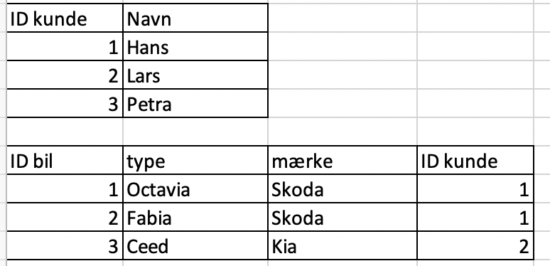
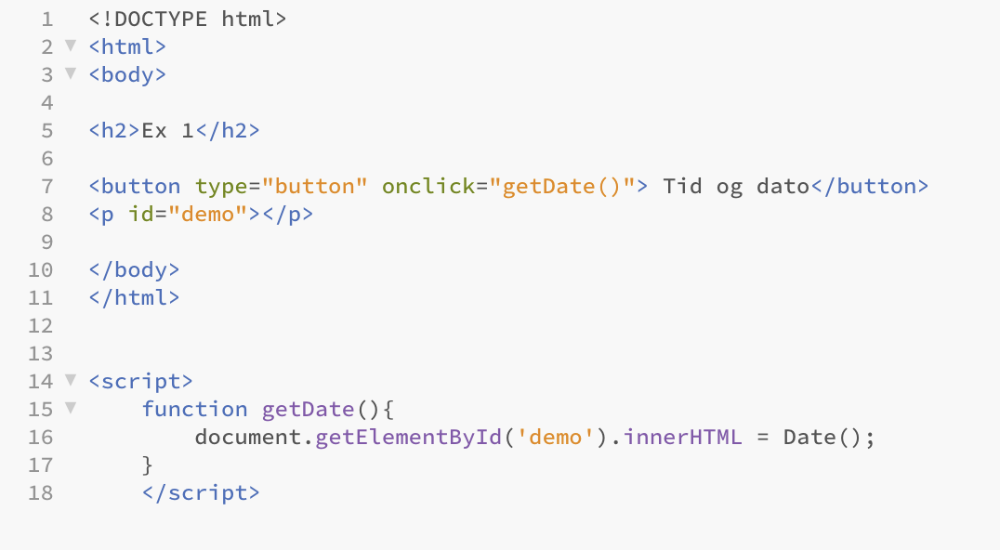

Formålet med forløbet var at arbejde med og forstå databaser, samt at implementere dem i en simpel version på en hjemmeside. Vi skulle udvikle en prototype på en quiz- eller flashcard-hjemmeside, lavet ved hjemmesideprogrammering, for at kombinere denne med en database. IT-løsningen skulle overholde følgende kriterier:
- En html brugerflade hvor der er overvejt brugervenligheden
- Data skal organiseres i en simpel database, regneark, som kan importeres som csv fil med javascript.
- Der skal redegøres for hvordan databasen kan normaliserese ved at gøre den til en relatinel database.
På følgende side vil jeg først gennemgå det grundlæggende ved databaser, efterfulgt af forløbets projekt beskrevet ovenfor.
En database er overordnet set en systematiseret samling af data på ét sted. Den gør det muligt at holde på en større mængde information, så den er let at tilgå og opdatere. Den kan gemme informationer om alt, for eksempel personer, biler, adresser osv.
I en trelagsarkitur inddeles et program i tre lag, hvilket er er nyttigt i implementeringen af programmer, da de tre lag så vidt mulig holdes adskilte og dermed er hele programmet lettere at overskue. Lagene er delt op på følgende måde:
Præsentationslaget er det øverste lag der håndterer modtagelse og præsentation af data. Dette lag er kendetegnet ved at være ”tæt” på brugeren af programmet. Et eksempel på hvordan dette kunne se ud på hjemmeside er LogIn-funktionen. Præsentationslaget skrives ofte i html/css, og kører direkte på computeren.
Logiklaget er det midterste lag der håndterer udvekslingen af data mellem præsentationslaget og datalaget. Et eksempel på dette lag er der hvor hjemmesiden får adgang til data, altså sammenkoplingen mellem de 2 sprog. Logiklaget skrives typsik i javascript/ps.j5, og kører ligesom præsentationslaget også på computeren.
Datalaget er det nederste og inderste lag der opbevarer og håndterer selve dataen. Dette lag er også kendetegnet ved at være ”tæt” på computeren fremfor brugeren. Et eksempel på dette er altså selve den database en hjemmeside indhenter informationer fra. Datalaget skrives i SQL.
Kolonnen som i en databse kaldes primærnøglen må kun indeholde unikke tal, og det er essentielt at intet tal ikke optræder mere end én gang i kolonnen. Har 2 brugere for eksempel det samme navn og password, sikrer man sig med primærnøglen, at de stadigvæk har 2 forskellige, unikke tak i "ID"-kolonnen (vores primærnøgle). Hermed kan computeren altså endnu kende forskel på dem. Foruden det unikke ID ville systemet ikke have mulighed for at kende forskel på 2 personer med samme navn og samme password. Dette ville kunne medføre store fejl. Det er blandt andet derfor at vi i Danmark har vores CPR-nummer. For primærnøglen gælder altså følgende:
- En primærnøgle er en kolonne der udelukkende indeholder unikke værdier.
- Alle tabeller i en database har en primærnøgle.
- Primærnøglen gør det muligt at kende forskel på alle tabellens rækker, trods at de indeholder ens informationer. Altså så længe at primærnøglen er unik!
En sekundærnøgle kan man også sige er en primærnøgle fra en anden tabel. Sekundærnøglen er altså en kolonne der indeholder de sammen værdier som en primærnøgle i en anden tabel. Modsat primærnøglen behøver sekundærnøglen IKKE at være unik. Et eksempel på dette kunne være følgende:
- En familie på 4 har hver deres ID, men bor alle på sammen adresse. I en tabel ville man altså skulle skrive den samme adresse ind 4 gange. Men ved brug af sekundærnøglen kan dette undgåes. I en anden tabel kan alle adresser i et system få deres eget ID, og i den første tabel der der nu i sekundærnøgles refereres til den samme adresse 4 gange uden at skulle gentage den. Det gør altså systemet meget mere overskueligt. Bor andre personer i databasen også på samme adresse kan der igen blot referes til adressens ID.
Et E/R-diagram er en model som benyttes til at opstille en grafisk præsentation af hvordan en databse og dens seperate elementer er opbygget og har forbindelse til hinanden. Det visualiserer altså en database, og gør den nemmere for os at forstå og få indblik i.Alle komponenterne har forskellige former (firkanter, cirkler osv), som forbindes med linjer. Disse linjer angiver relationen mellem komponenterne. Nedenfor vil jeg forklare om disse komponenter.
En entitetstype er en bestemt kategori som en database indeholder oplysninger om. Den kan bestå af hvad som helst, for eksempel personer, steder osv. En database kan indeholde et ubestemt antal af entitetstyper. I et E/R-diagram præsenteres en entitet med en firkant. Denne entitetstype kan indeholde entiteter. Er entitetstypen for eksempel personer, ville entiteterne være speifikke personer. En entitetstype kan indeholde et ubestemt antal af entiteter.
Attributer giver os oplysninger om hver entitet i entitetstypen. Tager vi igen eksemplet med personer, ville attributerne blandt andet være fornavne, efternavne osv på entiteterne. Dermes kan en entitetstype altså også have et ubestemt antal attributer. Attributer præsenteres i et E/R-diagram med en cirkel.
For at computeren kan forstå vores databaser er det essentielt at systemet er struktureret. For eksempel er det skrevet tideligere vigtigt at undgå gentagelser. Dette kan man undgå ved at normalisere sin database. Formålet med at normalisere er, at gøre det nemmere og mindre risikabelt at foretage rettelser i databasen uden de store problemer ved at undgå gentagelser. Følgende regler gælder for normalisering af en database:
- Primærknøglen skal fortsat være unik.
- Alle kolonner må udelukkende være afhængige af primærnøglen.
- Hver kolonne må kun indeholde 1 datatype
- Det samme data må ikke gentage sig, og skal altså kun forekomme 1 sted
- Alt data skal være relateret til hinanden
Her er et eksempel på hvordan et datasæ kan normaliseres. Inden normaliseringen var primærnøglen "ID" ikke unik, og der var flere gentagelser i datasættet. Desuden var alle kolonner ikke udelukkende afhængige af primærnøglen:
Nu er datasættet normaliseret ved at dele vores data op i flere tabeller, og hermed benyttes vores viden om sekundærnøgler. Her fungerer ID bil som primærnøgle, mens ID kunde fungerer som sekundærnøgle:
Formålet med projektet var som tideligere skrevet at bruge vores viden om databaser til at strukturere indholdet af en på en hjemmeside. For at kunne loade data samt at kunne bruge den skal vi benytte os af programmeringssproget javascript. Dette sprog er rigtig godt hvis man ønsker at lave en interaktiv hjemmeside, som i denne quiz-hjemmeside. For at kunne kode HTML og Javascript sammen skriver man i html-koden "script". nu forstår vores hjemmeside altså at vi skriver i javascript indenfor dette område, og vi kan nu lave funktioner som normalt i javascript. I eksemplet nedenfor vil funktionen GetDate køre når der trykkes på knappen. Funktionen gemmer den indhentede dato som en variabel. Denne variabel læses i html i id'et "demo":
Herunder ses et udklip af koden fra vores eget projekt med databaser og hjemmesider. Som i eksemplet ovenfor køres igen en funktion når der trykkes på knappen, her funktionen "quiz()". Herefter definerer vi vores variabel "x". Det er i linje 27 angivet at der udvælges et tal mellem 0 og 1, og dette ganges 4. Som resultat af "math.floor"-kommandoen afrundes tallet nu til nærmeste hele tal. Sidst plusses det med 1. Hele denne kommando gør det tilfældigt hvilket spørgsmål der kommer op på skærmen når der trykkes på knappen.
I den næste del af koden køres en ny funktion, "genererTekst()". Har går "i" fra 0 til længden af databasen, altså antal elementer vi har med. Herefter tager den ID'et til den tilsvarende "i", og sammenligner denne med den tideligere tilfældigt fundne x-værdi. Hvis det gælder at disse er lig hinanden tager den spørgsmålet til dette "i", og det samme gøres med svaret. Hele denne løkke stoppes nu indtil der igen trykkes på knappen. Når dette sker starter lykken igen forfra.
Som resultat af hele denne funktion har vi fundet et tilfældigt spørgsmål et det tilsvarende svar. Disse data trækkes ud fra en database vi har lavet.